Erzeugt von werkzeug/welt/katalog.py. Rot: Verstoß gegen eine Muss-Regel. Gelb: Hinweis.
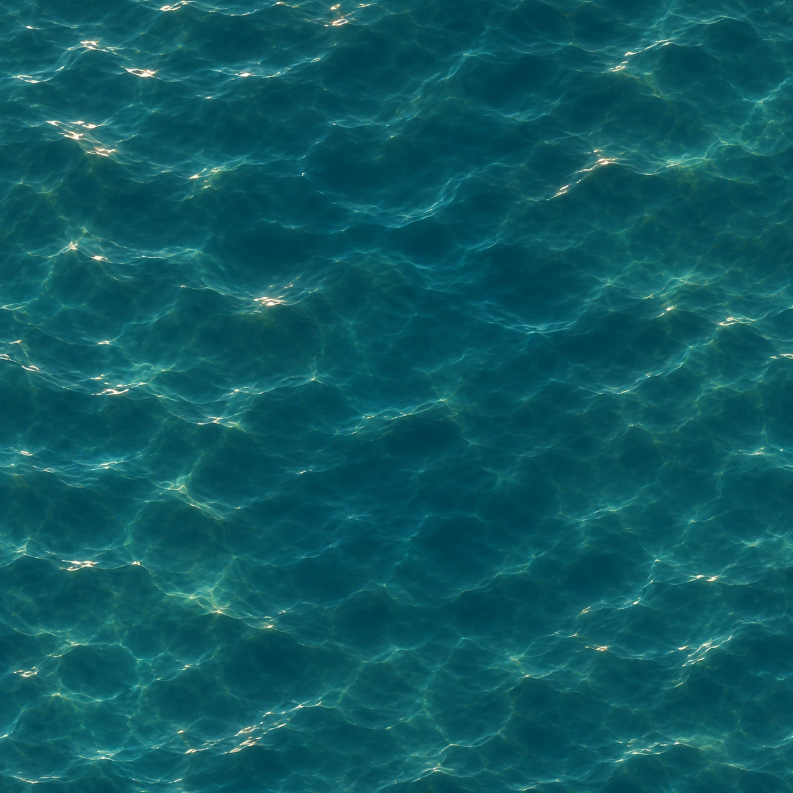
Zeichen „~“ · Rang 0 · gesperrt
Rand: ufer 1.2
1254 × 1254 · 206 KB · Naht 3.08
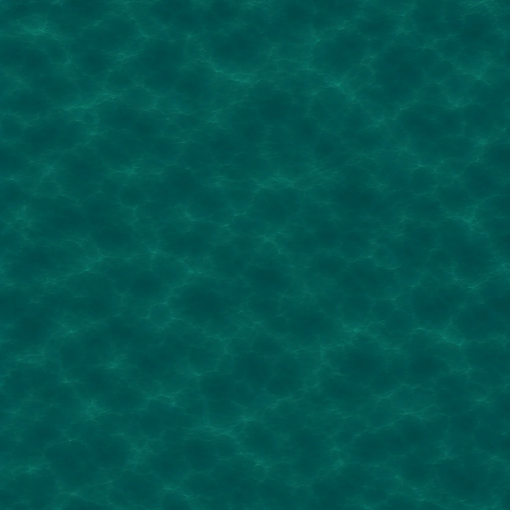
Zeichen „w“ · Rang 1 · gesperrt
Rand: ufer 1.2
1254 × 1254 · 70 KB · Naht 5.95
Zeichen „o“ · Rang 2 · gesperrt
Rand: ufer 0.6
Zeichen „m“ · Rang 10 · begehbar
Rand: fransen 1.2
Zeichen „t“ · Rang 12 · begehbar
Rand: fransen 1
Zeichen „s“ · Rang 15 · begehbar
Rand: fransen 1.2
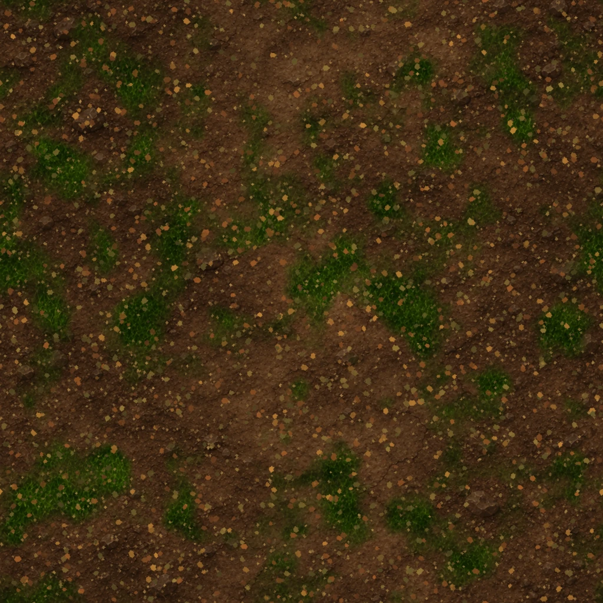
Zeichen „f“ · Rang 20 · begehbar
Rand: fransen 2.2
1024 × 1024 · 259 KB · Naht 1.31
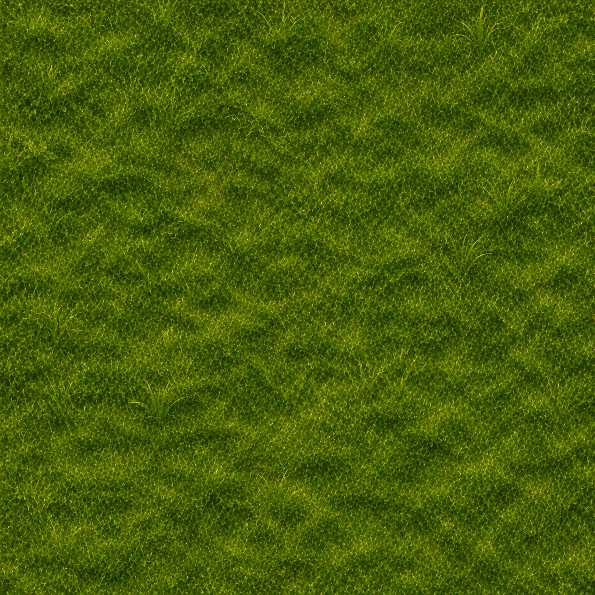
Zeichen „.“ · Rang 30 · begehbar
Rand: fransen 1.5
1024 × 1024 · 397 KB · Naht 1.71
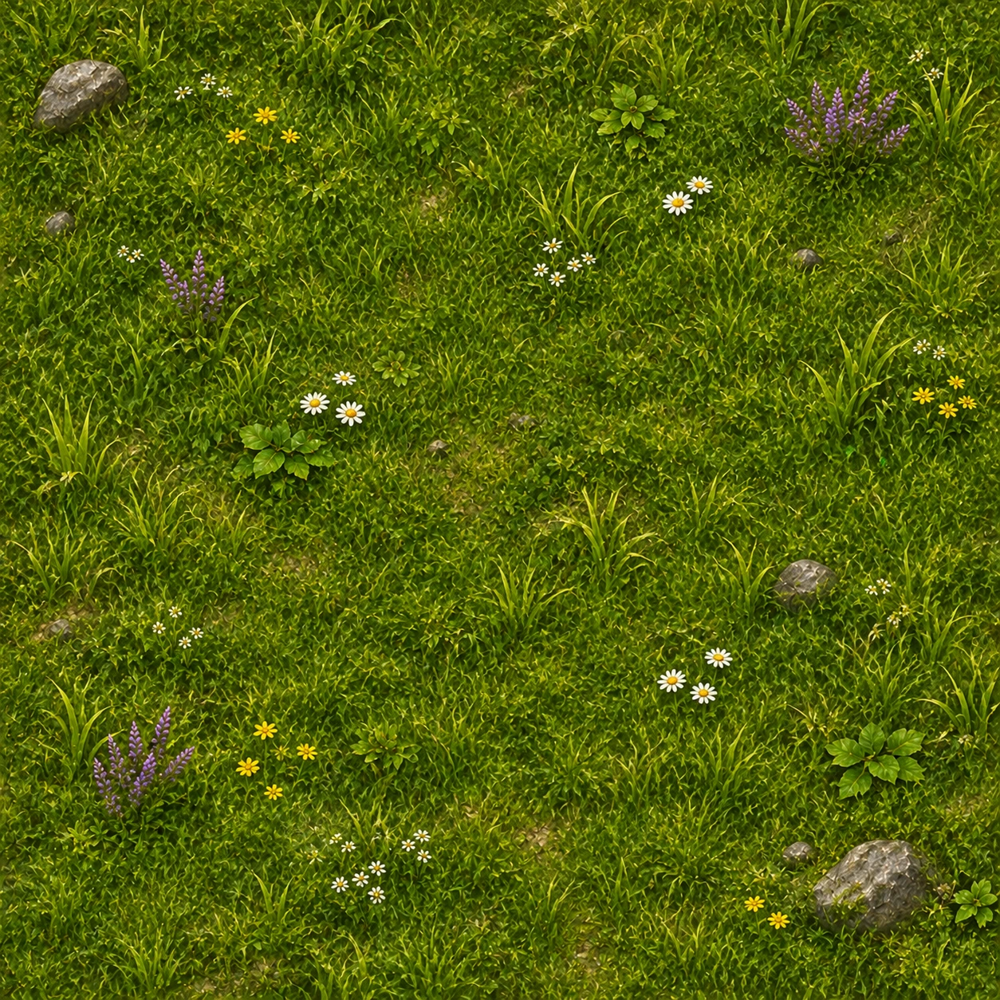
Zeichen „,“ · Rang 31 · begehbar
Rand: fransen 2
1024 × 1024 · 397 KB · Naht 1.71
Zeichen „a“ · Rang 35 · begehbar
Rand: hart 0.3
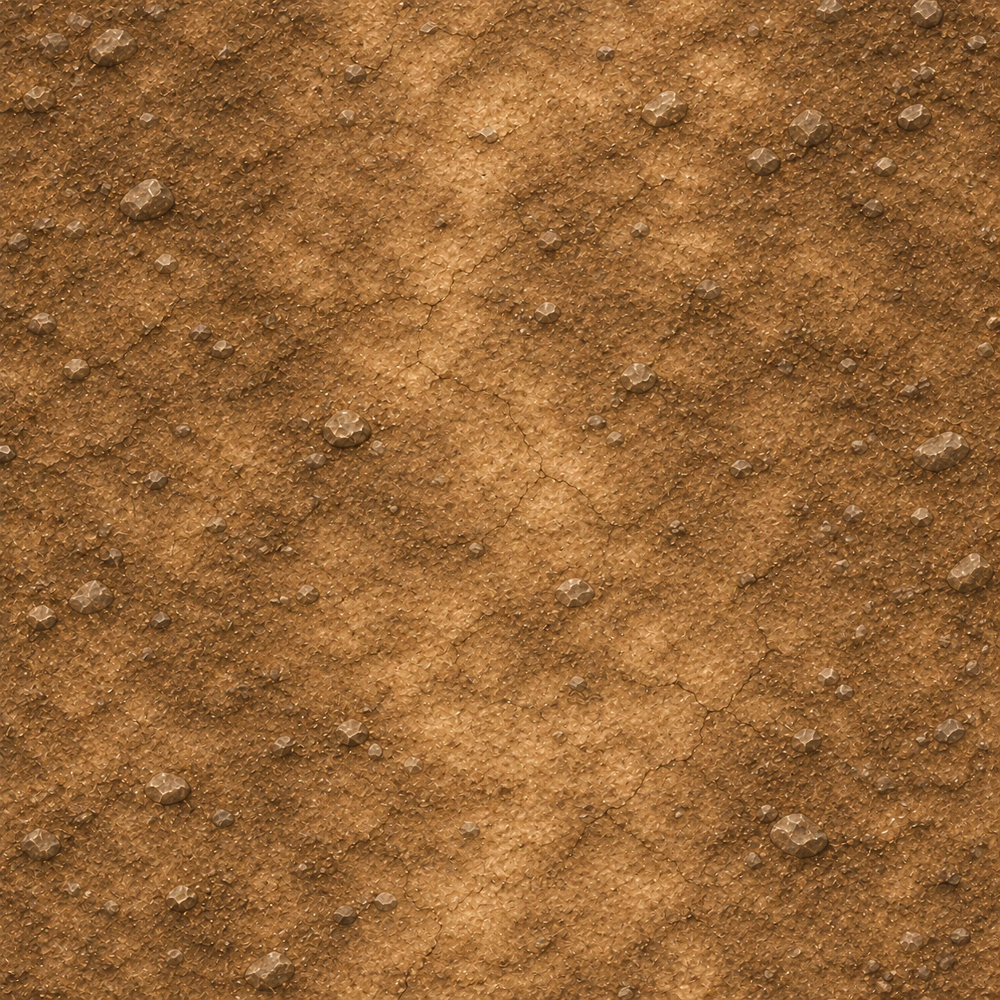
Zeichen „e“ · Rang 40 · begehbar
Rand: fransen 1.1
1254 × 1254 · 731 KB · Naht 1.6
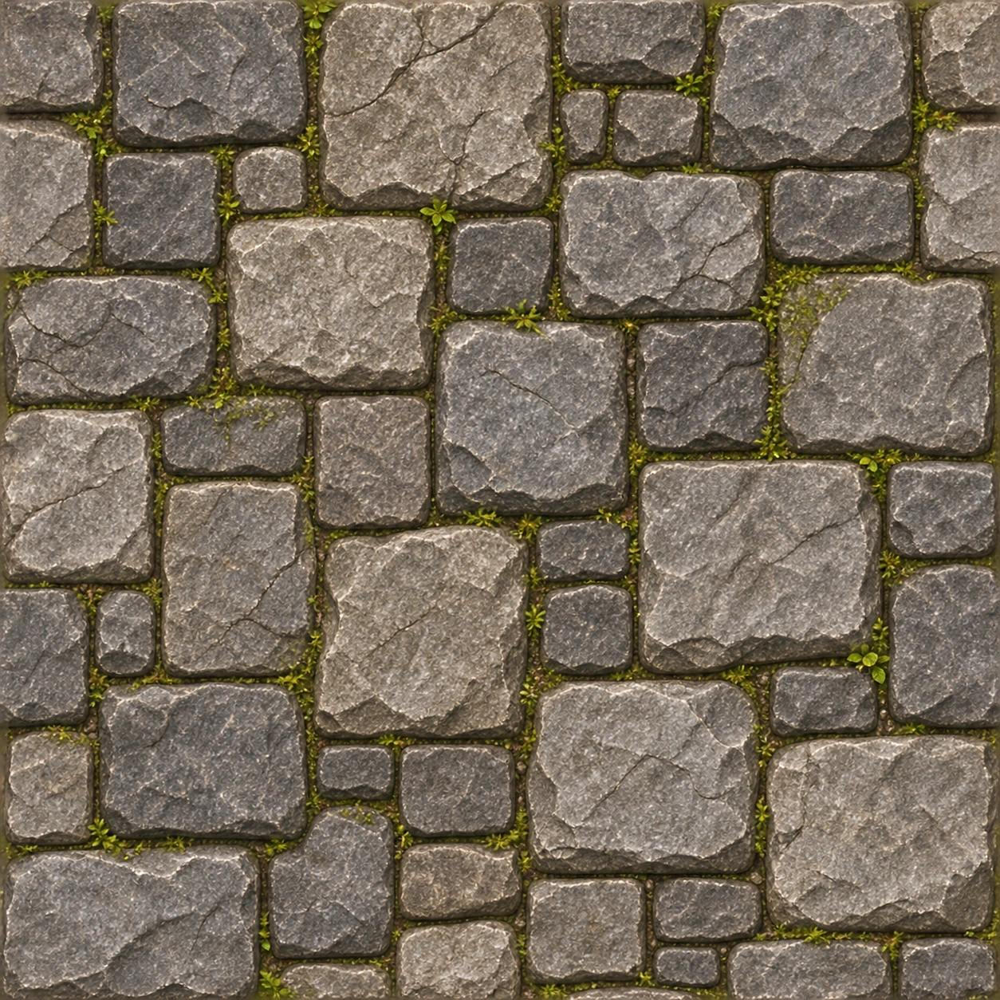
Zeichen „p“ · Rang 50 · begehbar
Rand: steine 0.8
1254 × 1254 · 685 KB · Naht 2.47
Zeichen „F“ · Rang 60 · gesperrt
Rand: hart 0.4
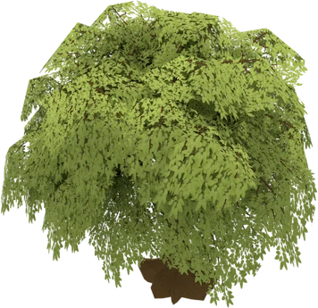
bewuchs · fuss
356 × 345 · 72 KB
gezeigt 345 px = 4.1 Heldenhöhen
Anker [0.5549, 0.9335] · gemessen [0.61, 1.0]
Kollision: {"art": "kreis", "r": 0.45}
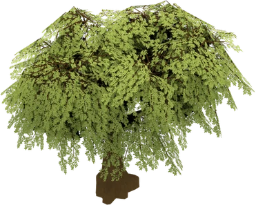
bewuchs · fuss
371 × 297 · 65 KB
gezeigt 297 px = 3.5 Heldenhöhen
Anker [0.4475, 0.9428] · gemessen [0.443, 1.0]
Kollision: {"art": "kreis", "r": 0.45}
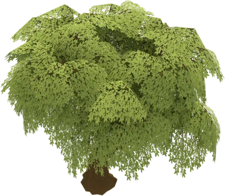
bewuchs · fuss
368 × 321 · 68 KB
gezeigt 321 px = 3.8 Heldenhöhen
Anker [0.438, 0.9596] · gemessen [0.438, 0.997]
Kollision: {"art": "kreis", "r": 0.45}
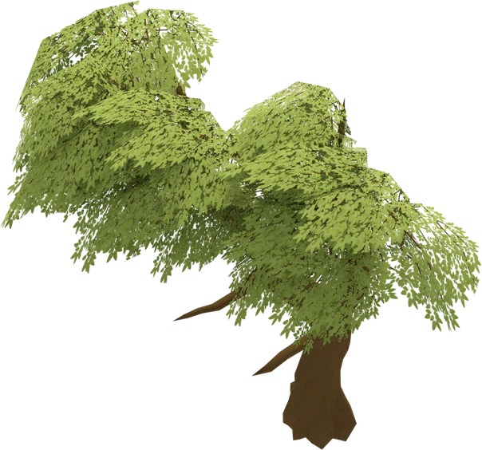
bewuchs · fuss
604 × 564 · 128 KB
gezeigt 564 px = 6.7 Heldenhöhen
Anker [0.6439, 0.949] · gemessen [0.668, 1.0]
Kollision: {"art": "kreis", "r": 0.7}
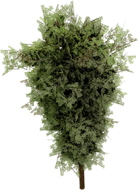
bewuchs · fuss
231 × 317 · 39 KB
gezeigt 317 px = 3.8 Heldenhöhen
Anker [0.5949, 0.9907] · gemessen [0.595, 1.0]
Kollision: {"art": "kreis", "r": 0.3}
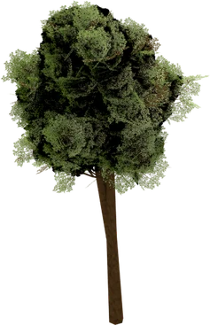
bewuchs · fuss
237 × 367 · 29 KB
gezeigt 367 px = 4.4 Heldenhöhen
Anker [0.5536, 0.9875] · gemessen [0.553, 1.0]
Kollision: {"art": "kreis", "r": 0.3}
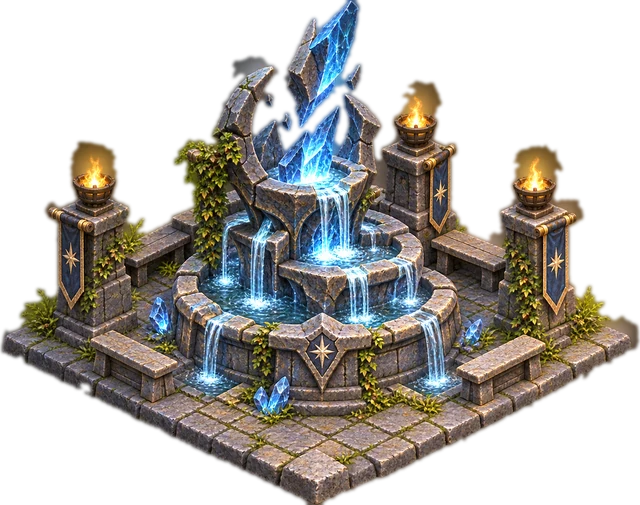
kleinteil · fuss
640 × 505 · 98 KB
gezeigt 152 px = 1.8 Heldenhöhen
Anker [0.5, 0.9] · gemessen [0.497, 1.0]
Kollision: {"art": "kreis", "r": 1.1}
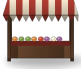
kleinteil · fuss
162 × 138 · 7 KB
gezeigt 138 px = 1.6 Heldenhöhen
Anker [0.5, 0.8841] · gemessen [0.54, 0.978]
Kollision: {"art": "rechteck", "x": -1.5, "y": -1.0, "b": 3.0, "h": 1.0}
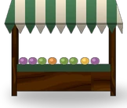
kleinteil · fuss
162 × 138 · 7 KB
gezeigt 138 px = 1.6 Heldenhöhen
Anker [0.5, 0.8841] · gemessen [0.54, 0.978]
Kollision: {"art": "rechteck", "x": -1.5, "y": -1.0, "b": 3.0, "h": 1.0}
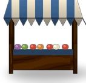
kleinteil · fuss
142 × 138 · 6 KB
gezeigt 138 px = 1.6 Heldenhöhen
Anker [0.5, 0.8841] · gemessen [0.546, 0.978]
Kollision: {"art": "rechteck", "x": -1.25, "y": -1.0, "b": 2.5, "h": 1.0}
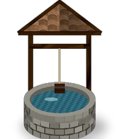
kleinteil · fuss
168 × 196 · 7 KB
gezeigt 196 px = 2.3 Heldenhöhen
Anker [0.5, 0.8878] · gemessen [0.536, 1.0]
Kollision: {"art": "kreis", "r": 1.15, "dy": -0.35}
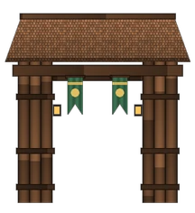
bauteil · fuss
216 × 236 · 10 KB
gezeigt 236 px = 2.8 Heldenhöhen
Anker [0.5, 0.9492] · gemessen [0.5, 0.953]
Kollision: keine
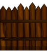
bauteil · fuss
96 × 112 · 3 KB
gezeigt 112 px = 1.3 Heldenhöhen
Anker [0.5, 0.9107] · gemessen [0.5, 0.92]
Kollision: {"art": "rechteck", "x": -1.0, "y": -0.75, "b": 2.0, "h": 0.8}
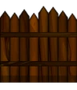
bauteil · fuss
96 × 112 · 3 KB
gezeigt 112 px = 1.3 Heldenhöhen
Anker [0.5, 0.9107] · gemessen [0.5, 0.92]
Kollision: {"art": "rechteck", "x": -1.0, "y": -0.75, "b": 2.0, "h": 0.8}
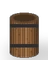
kleinteil · fuss
48 × 60 · 1 KB
gezeigt 60 px = 0.7 Heldenhöhen
Anker [0.5, 0.8667] · gemessen [0.573, 1.0]
Kollision: {"art": "kreis", "r": 0.35}
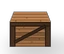
kleinteil · fuss
64 × 54 · 1 KB
gezeigt 54 px = 0.6 Heldenhöhen
Anker [0.5, 0.8519] · gemessen [0.57, 1.0]
Kollision: {"art": "rechteck", "x": -0.45, "y": -0.55, "b": 0.9, "h": 0.55}
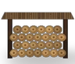
kleinteil · fuss
96 × 82 · 5 KB
gezeigt 82 px = 1.0 Heldenhöhen
Anker [0.5, 0.9024] · gemessen [0.589, 1.0]
Kollision: {"art": "rechteck", "x": -0.8, "y": -0.6, "b": 1.6, "h": 0.6}
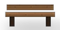
kleinteil · fuss
86 × 44 · 1 KB
gezeigt 44 px = 0.5 Heldenhöhen
Anker [0.5, 0.8636] · gemessen [0.57, 1.0]
Kollision: {"art": "rechteck", "x": -0.72, "y": -0.35, "b": 1.44, "h": 0.35}
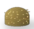
kleinteil · fuss
70 × 60 · 2 KB
gezeigt 60 px = 0.7 Heldenhöhen
Anker [0.5, 0.8667] · gemessen [0.614, 1.0]
Kollision: {"art": "kreis", "r": 0.5}
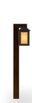
kleinteil · fuss
40 × 128 · 1 KB
gezeigt 128 px = 1.5 Heldenhöhen
Anker [0.5, 0.9531] · gemessen [0.5, 0.961]
Kollision: {"art": "kreis", "r": 0.18}
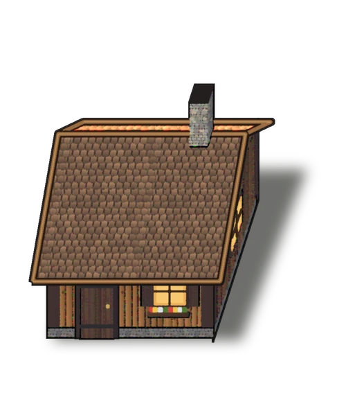
gebaeude · fuss
487 × 583 · 23 KB
gezeigt 583 px = 6.9 Heldenhöhen
Anker [0.3876, 0.8336] · gemessen [0.439, 0.852]
Kollision: {"art": "gebaeude", "koerper": [{"x0": -2.5, "x1": 2.5, "y0": -4, "y1": 0, "voll": false}], "tueren": [{"x0": -1.525, "x1": -0.475, "y": 0}]}
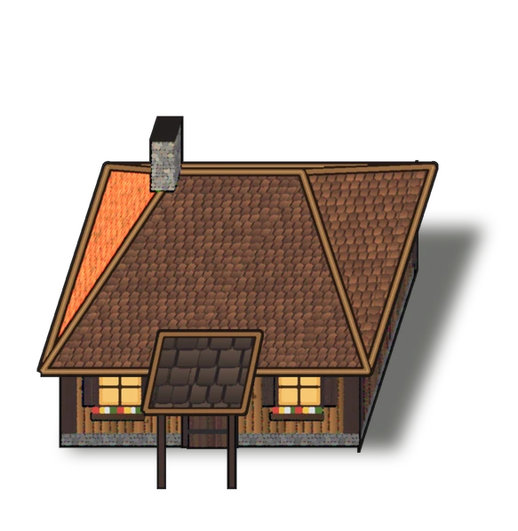
gebaeude · fuss
559 × 597 · 31 KB
gezeigt 597 px = 7.1 Heldenhöhen
Anker [0.4021, 0.8382] · gemessen [0.375, 0.92]
Kollision: {"art": "gebaeude", "koerper": [{"x0": -3.25, "x1": 3.25, "y0": -4, "y1": 0, "voll": false}], "tueren": [{"x0": -0.525, "x1": 0.525, "y": 0}]}
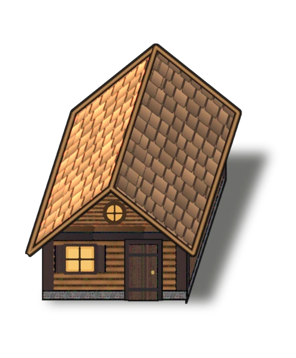
gebaeude · fuss
487 × 578 · 30 KB
gezeigt 578 px = 6.9 Heldenhöhen
Anker [0.3942, 0.8284] · gemessen [0.448, 0.848]
Kollision: {"art": "gebaeude", "koerper": [{"x0": -2.5, "x1": 2.5, "y0": -3.6, "y1": 0, "voll": false}], "tueren": [{"x0": 0.375, "x1": 1.425, "y": 0}]}
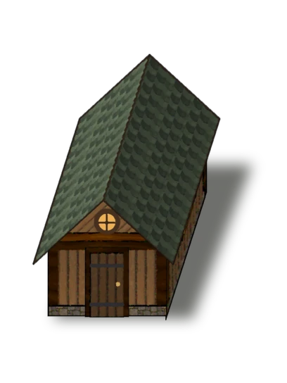
gebaeude · fuss
408 × 544 · 20 KB
gezeigt 544 px = 6.5 Heldenhöhen
Anker [0.3745, 0.8228] · gemessen [0.433, 0.842]
Kollision: {"art": "gebaeude", "koerper": [{"x0": -1.75, "x1": 1.75, "y0": -3.5, "y1": 0, "voll": false}], "tueren": [{"x0": -0.5, "x1": 0.5, "y": 0}]}
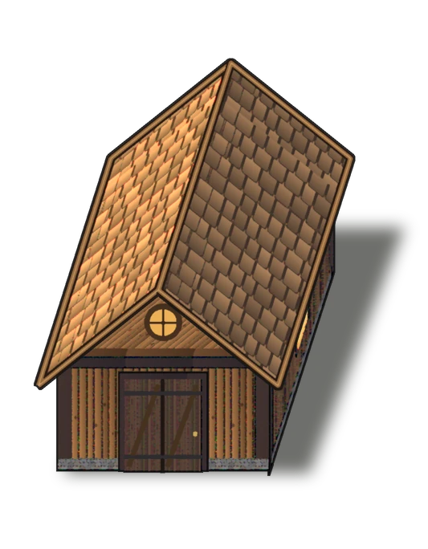
gebaeude · fuss
533 × 684 · 43 KB
gezeigt 684 px = 8.1 Heldenhöhen
Anker [0.3826, 0.8544] · gemessen [0.442, 0.87]
Kollision: {"art": "gebaeude", "koerper": [{"x0": -2.75, "x1": 2.75, "y0": -5, "y1": 0, "voll": false}], "tueren": [{"x0": -1.0, "x1": 1.0, "y": 0}]}
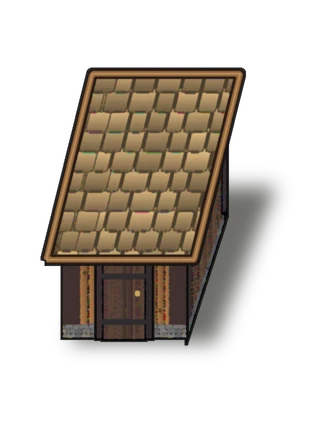
gebaeude · fuss
335 × 429 · 16 KB
gezeigt 429 px = 5.1 Heldenhöhen
Anker [0.3727, 0.786] · gemessen [0.428, 0.811]
Kollision: {"art": "gebaeude", "koerper": [{"x0": -1.3, "x1": 1.3, "y0": -2.4, "y1": 0, "voll": true}], "tueren": [{"x0": -0.45, "x1": 0.45, "y": 0}]}
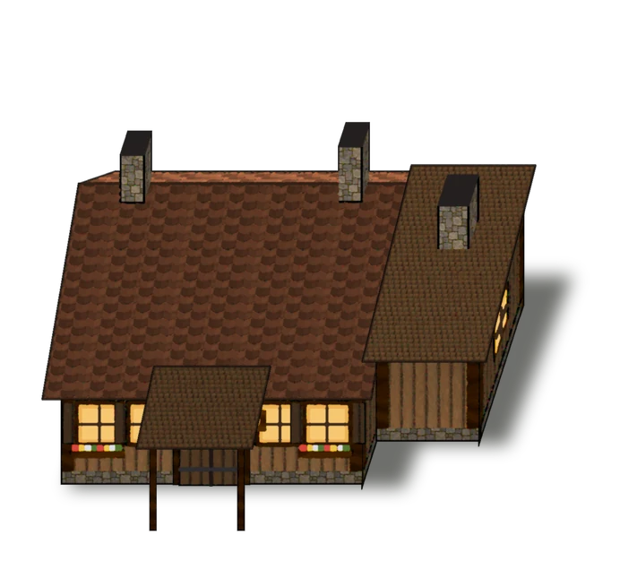
gebaeude · fuss
692 × 636 · 45 KB
gezeigt 636 px = 7.6 Heldenhöhen
Anker [0.3422, 0.8472] · gemessen [0.318, 0.932]
Kollision: {"art": "gebaeude", "koerper": [{"x0": -3.5, "x1": 3.5, "y0": -4.5, "y1": 0, "voll": false}, {"x0": 3.5, "x1": 5.9, "y0": -4.0, "y1": -1.0, "voll": true}], "tueren": [{"x0": -0.75, "x1": 0.75, "y": 0}]}
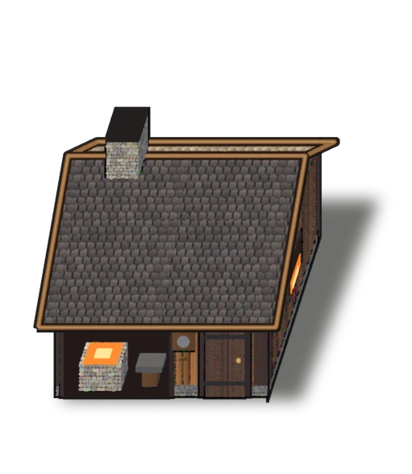
gebaeude · fuss
511 × 588 · 23 KB
gezeigt 588 px = 7.0 Heldenhöhen
Anker [0.3929, 0.8347] · gemessen [0.443, 0.854]
Kollision: {"art": "gebaeude", "koerper": [{"x0": -2.75, "x1": 2.75, "y0": -4, "y1": 0, "voll": false}], "tueren": [{"x0": 1.1149999999999998, "x1": 2.165, "y": 0}]}
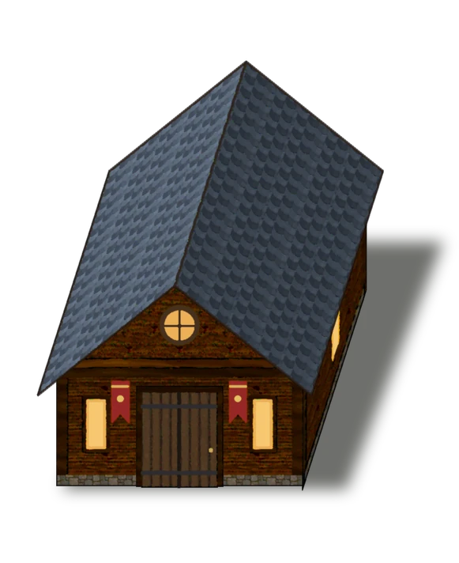
gebaeude · fuss
581 × 712 · 41 KB
gezeigt 712 px = 8.5 Heldenhöhen
Anker [0.3923, 0.8612] · gemessen [0.451, 0.876]
Kollision: {"art": "gebaeude", "koerper": [{"x0": -3.25, "x1": 3.25, "y0": -5, "y1": 0, "voll": false}], "tueren": [{"x0": -1.0, "x1": 1.0, "y": 0}]}
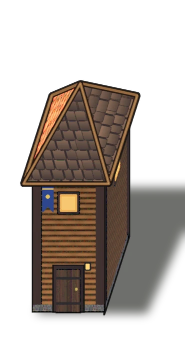
gebaeude · fuss
370 × 717 · 23 KB
gezeigt 717 px = 8.5 Heldenhöhen
Anker [0.3719, 0.8686] · gemessen [0.505, 0.884]
Kollision: {"art": "gebaeude", "koerper": [{"x0": -1.5, "x1": 1.5, "y0": -3, "y1": 0, "voll": true}], "tueren": [{"x0": -0.45, "x1": 0.45, "y": 0}]}
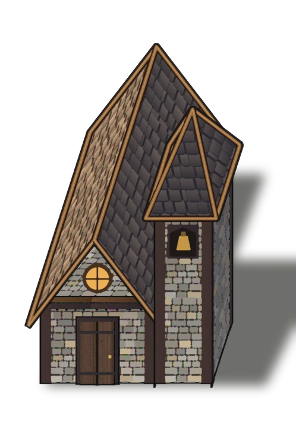
gebaeude · fuss
498 × 741 · 42 KB
gezeigt 741 px = 8.8 Heldenhöhen
Anker [0.3309, 0.8696] · gemessen [0.534, 0.884]
Kollision: {"art": "gebaeude", "koerper": [{"x0": -2, "x1": 2, "y0": -6, "y1": 0, "voll": false}, {"x0": 2.0, "x1": 4.0, "y0": -2.0, "y1": 0, "voll": true}], "tueren": [{"x0": -0.6, "x1": 0.6, "y": 0}]}
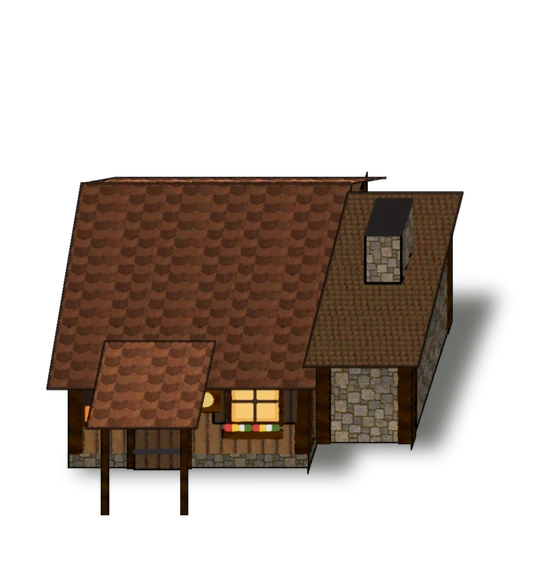
gebaeude · fuss
557 × 564 · 30 KB
gezeigt 564 px = 6.7 Heldenhöhen
Anker [0.3389, 0.8277] · gemessen [0.259, 0.915]
Kollision: {"art": "gebaeude", "koerper": [{"x0": -2.5, "x1": 2.5, "y0": -3.6, "y1": 0, "voll": false}, {"x0": 2.5, "x1": 4.5, "y0": -2.9, "y1": -0.5, "voll": true}], "tueren": [{"x0": -1.125, "x1": -0.07499999999999996, "y": 0}]}
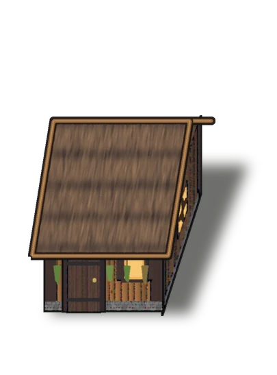
gebaeude · fuss
405 × 547 · 17 KB
gezeigt 547 px = 6.5 Heldenhöhen
Anker [0.3753, 0.8271] · gemessen [0.437, 0.846]
Kollision: {"art": "gebaeude", "koerper": [{"x0": -1.8, "x1": 1.8, "y0": -3.4, "y1": 0, "voll": false}], "tueren": [{"x0": -1.1, "x1": -0.09999999999999998, "y": 0}]}
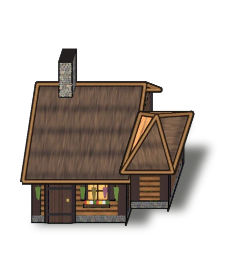
gebaeude · fuss
485 × 547 · 23 KB
gezeigt 547 px = 6.5 Heldenhöhen
Anker [0.3332, 0.8271] · gemessen [0.388, 0.846]
Kollision: {"art": "gebaeude", "koerper": [{"x0": -2, "x1": 2, "y0": -3.2, "y1": 0, "voll": false}, {"x0": 2.0, "x1": 3.6, "y0": -2.4, "y1": -0.6, "voll": true}], "tueren": [{"x0": -1.3, "x1": -0.30000000000000004, "y": 0}]}
gelaende · draufsicht
1254 × 1254 · RGB · 742 KB
in der Bibliothek: gelaende.wiese
gelaende · draufsicht
1254 × 1254 · RGB · 803 KB
in der Bibliothek: gelaende.wiese_blumen
gelaende · draufsicht
1254 × 1254 · RGB · 731 KB
in der Bibliothek: gelaende.erde
gelaende · draufsicht
1254 × 1254 · RGB · 685 KB
in der Bibliothek: gelaende.pflaster
wasser · draufsicht
1254 × 1254 · RGB · 206 KB
in der Bibliothek: gelaende.wasser
wasser · draufsicht
1254 × 1254 · RGB · 70 KB
in der Bibliothek: gelaende.wasser_ruhig
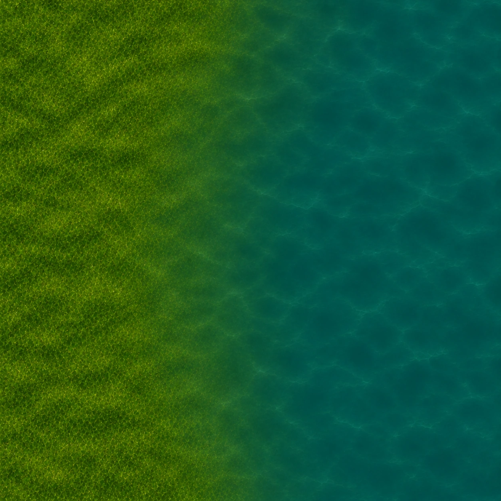
uebergang · draufsicht
1254 × 1254 · RGB · 282 KB
in der Bibliothek: gelaende.wiese (Uferrand)
bewuchs · welt
356 × 345 · RGBA · 72 KB
in der Bibliothek: objekte.wald_baum1
bewuchs · welt
371 × 297 · RGBA · 65 KB
in der Bibliothek: objekte.wald_baum2
bewuchs · welt
368 × 321 · RGBA · 68 KB
in der Bibliothek: objekte.wald_baum3
bewuchs · welt
604 × 564 · RGBA · 128 KB
in der Bibliothek: objekte.wald_baum4
bewuchs · welt
231 × 317 · RGBA · 39 KB
in der Bibliothek: objekte.wald_baum5
bewuchs · welt
237 × 367 · RGBA · 29 KB
in der Bibliothek: objekte.wald_baum6
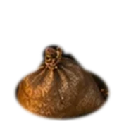
kleinteil · welt
176 × 176 · RGBA · 5 KB
ist im Kampf ein Schützling; als Dekoration nutzbar
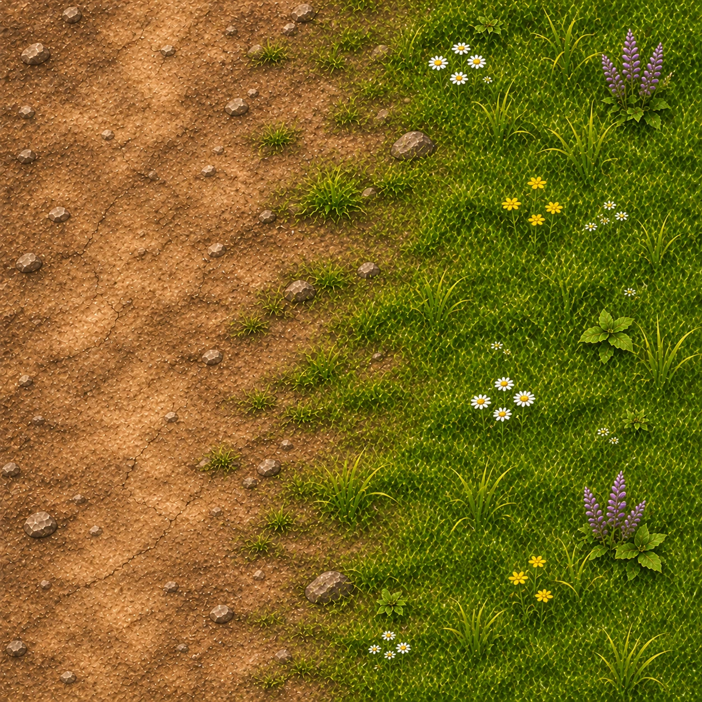
uebergang · draufsicht
1254 × 1254 · RGB · 791 KB
gemalte Randkachel, bisher von keinem Werkzeug genutzt; Übergänge werden gerechnet
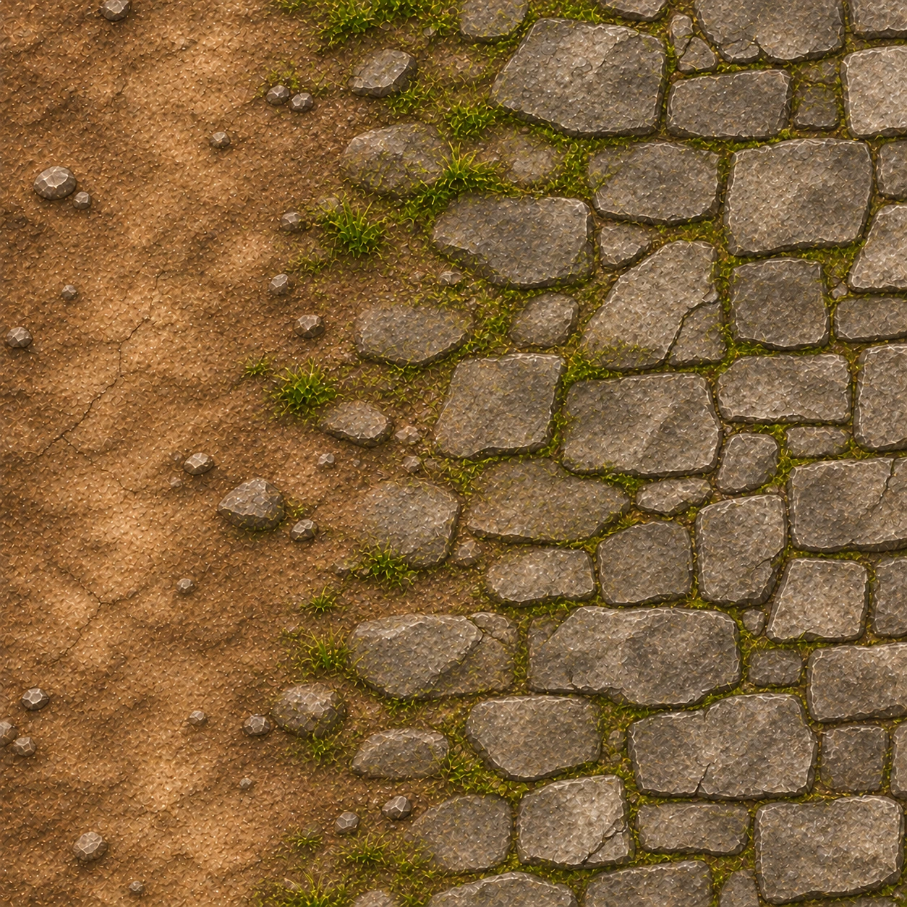
uebergang · draufsicht
1254 × 1254 · RGB · 765 KB
wie oben
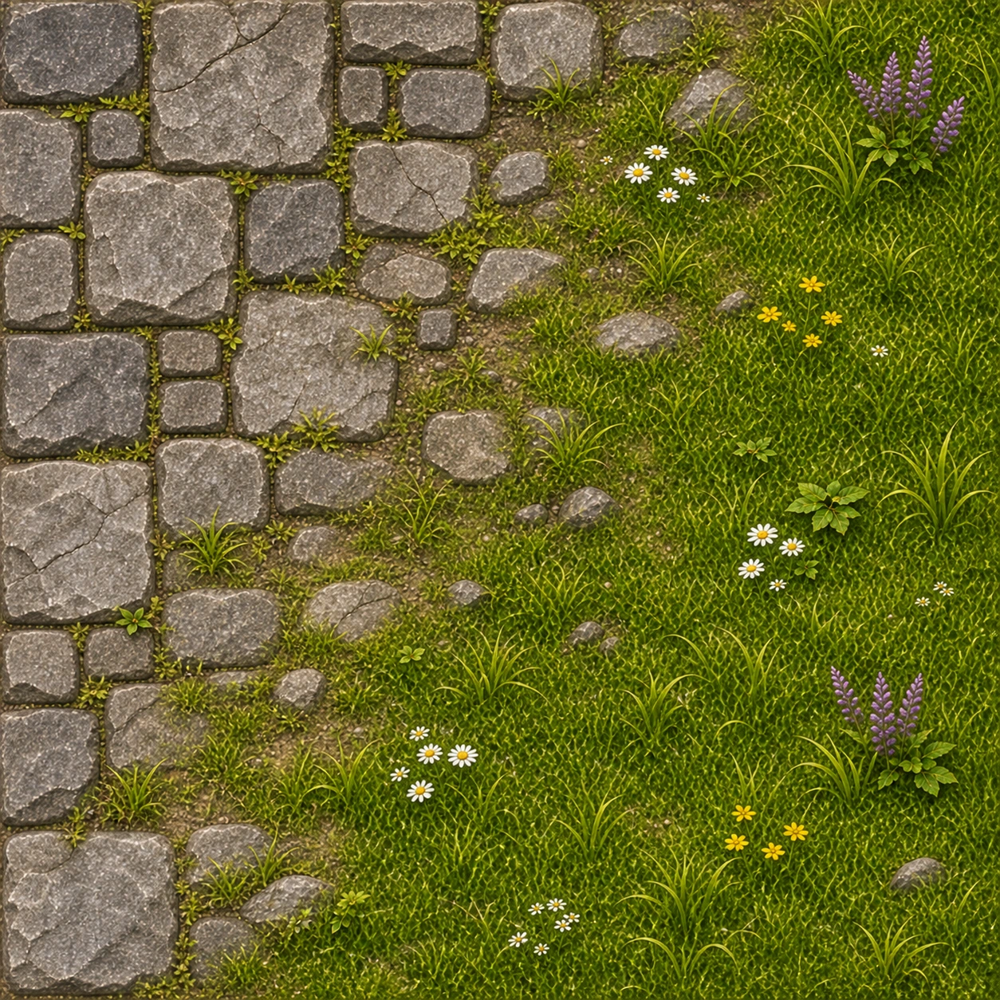
uebergang · draufsicht
1254 × 1254 · RGB · 791 KB
wie oben
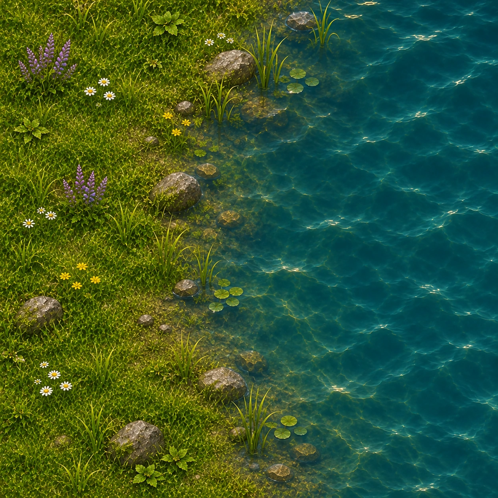
uebergang · draufsicht
1254 × 1254 · RGB · 540 KB
wie oben
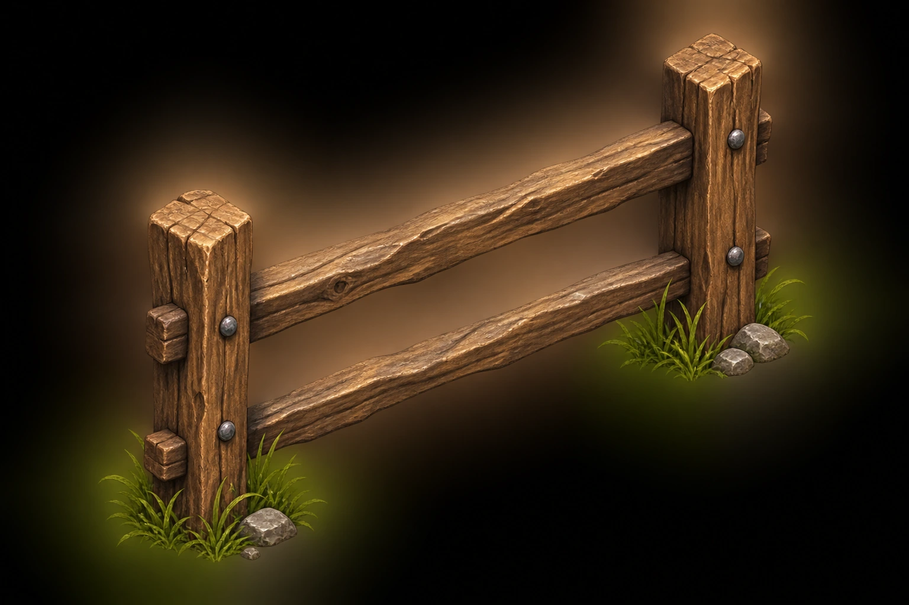
bauteil · welt
1536 × 1024 · RGB · 166 KB
Vorlage auf dunklem Grund mit Lichtschein, muss freigestellt werden
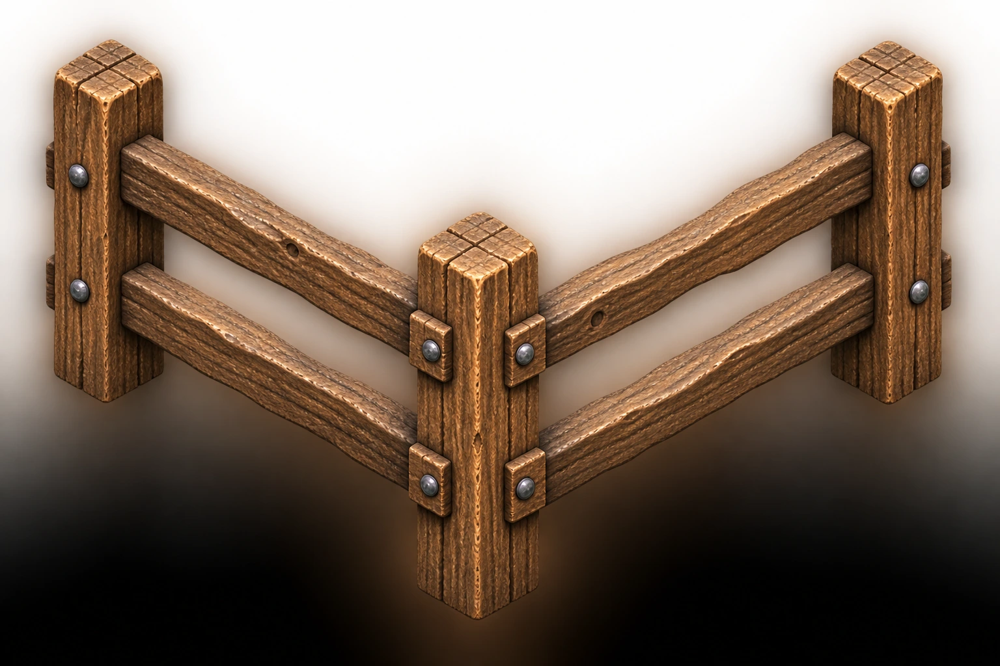
bauteil · welt
1536 × 1024 · RGB · 234 KB
Vorlage auf hellem Grund, muss freigestellt werden
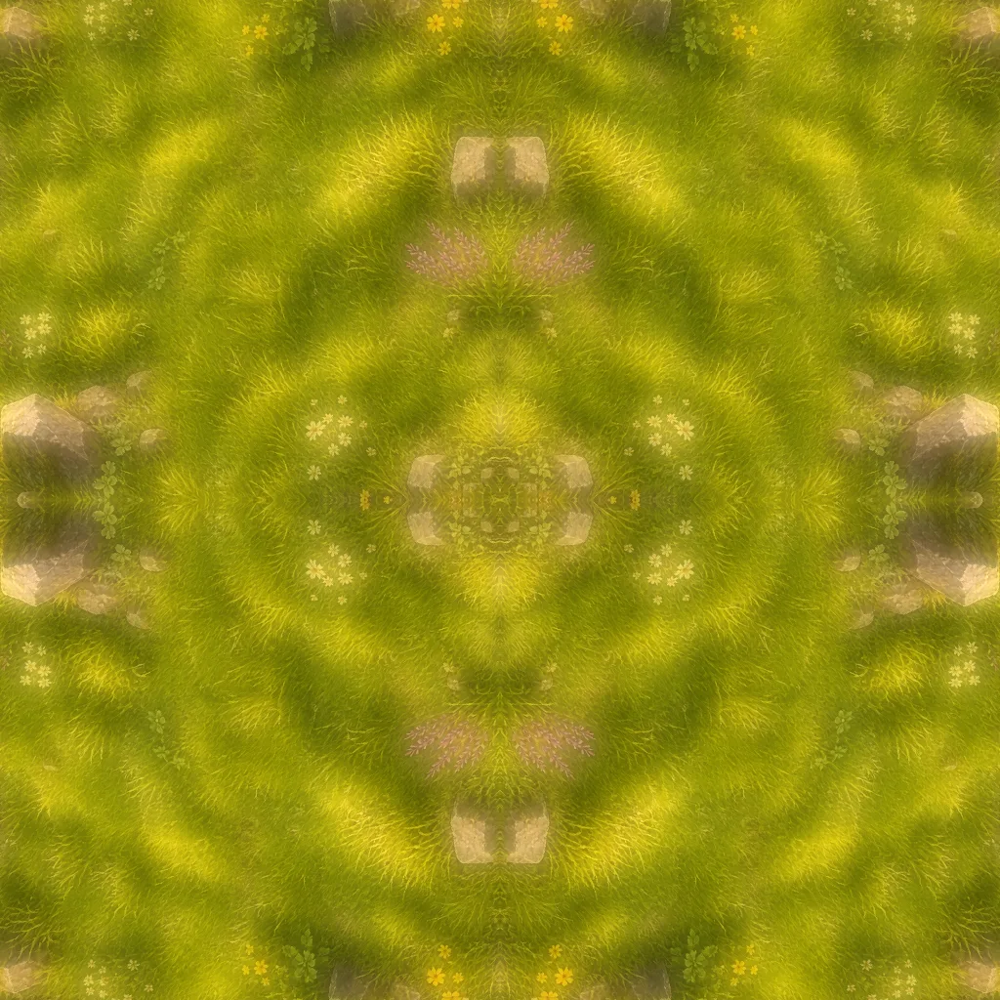
gelaende · draufsicht
1024 × 1024 · RGB · 204 KB
weichgezeichnete Wiese, Hintergrund der alten Stadt
bauteil · iso
918 × 688 · RGBA · 87 KB
kann nur zwei Richtungen
kleinteil · iso
640 × 505 · RGBA · 98 KB
in der Bibliothek: objekte.dorf_brunnen (Platzhalter)
kleinteil · iso
234 × 78 · RGBA · 14 KB
Bilderfolge 9 × 26 px, sehr klein
kleinteil · flach
1440 × 160 · RGBA · 87 KB
Bilderfolge 9 × 160 px
vorlage · iso
1536 × 1024 · RGBA · 2595 KB
Iso-Kachelblock, Quelle der alten Stadt
vorlage · iso
1536 × 1024 · RGBA · 2488 KB
Iso-Kachelblock, Quelle der alten Stadt
ort · gesamtbild
4096 × 2305 · RGB · 1790 KB
Quelle des gemalten Ortes Weidenhain
ort · gesamtbild
3500 × 1970 · RGB · 1495 KB
Quelle des gemalten Ortes Rabenmoor
ort · gesamtbild
3840 × 1728 · RGB · 691 KB
erzeugtes Bodenbild der Strecke; Felsen und Büsche sind fest eingemalt
ort · gesamtbild
2576 × 1450 · RGB · 1011 KB
Waldmark als ein Bild
ort · gesamtbild
2675 × 1506 · RGB · 930 KB
Weidenhain als ein Bild
ort · gesamtbild
2675 × 1506 · RGB · 965 KB
Rabenmoor als ein Bild
ort · gesamtbild
2700 × 1500 · RGB · 1265 KB
erzeugter Boden des Baukasten-Versuchs
ort · iso
3968 × 1984 · RGBA · 1697 KB
erzeugter Iso-Boden der alten Stadt
ort · iso
1696 × 848 · RGBA · 104 KB
erzeugter Iso-Boden des Risses
bewuchs · iso
420 × 498 · RGBA · 98 KB
steht auf eigenem Steinsockel
bewuchs · iso
320 × 622 · RGBA · 87 KB
steht auf eigenem Steinsockel
bauteil · iso
256 × 156 · RGBA · 15 KB
Wandblöcke des Risses
gebaeude · iso
720 × 582 · RGBA · 122 KB
Iso mit Pflastersockel (alte Stadt)
gebaeude · iso
760 × 571 · RGBA · 148 KB
Iso mit Pflastersockel
gebaeude · iso
760 × 557 · RGBA · 145 KB
Iso mit Pflastersockel
gebaeude · iso
720 × 541 · RGBA · 119 KB
Iso mit Pflastersockel
gebaeude · iso
760 × 521 · RGBA · 98 KB
Iso mit Pflastersockel
gebaeude · iso
1100 × 536 · RGBA · 232 KB
ganze Häuserzeile, keine Einzelhäuser
gebaeude · iso
1100 × 533 · RGBA · 233 KB
ganze Häuserzeile
oberflaeche · flach
1524 × 1012 · RGB · 729 KB
Pergamentkarte
oberflaeche · flach
1280 × 720 · RGB · 36 KB
Hintergrund des Ladebildschirms
oberflaeche · flach
1728 × 128 · RGB · 33 KB
Bilderfolge der Währung
| Bild | Maße | Bilderfolge | KB |
|---|---|---|---|
| agnes.webp | 2160 × 240 | 9 × 1 zu 240 px | 76 |
| alwine-hieb.webp | 1056 × 176 | 6 × 1 zu 176 px | 70 |
| alwine-lauf.webp | 1056 × 176 | 6 × 1 zu 176 px | 68 |
| alwine-spezial.webp | 1056 × 176 | 6 × 1 zu 176 px | 86 |
| alwine.webp | 176 × 176 | 1 × 1 zu 176 px | 12 |
| ausrufer.webp | 1408 × 176 | 8 × 1 zu 176 px | 79 |
| bertold.webp | 2160 × 240 | 9 × 1 zu 240 px | 99 |
| boss-hieb.webp | 1584 × 176 | 9 × 1 zu 176 px | 75 |
| boss-lauf.webp | 1584 × 176 | 9 × 1 zu 176 px | 74 |
| boss-ruhe.webp | 1408 × 176 | 8 × 1 zu 176 px | 103 |
| boss.webp | 268 × 340 | Einzelbild | 39 |
| dorfgruppe.webp | 2700 × 300 | 9 × 1 zu 300 px | 249 |
| elara-heil.webp | 704 × 352 | 4 × 2 zu 176 px | 117 |
| elara-hieb.webp | 704 × 352 | 4 × 2 zu 176 px | 95 |
| elara-lauf.webp | 704 × 352 | 4 × 2 zu 176 px | 94 |
| elara.webp | 264 × 320 | Einzelbild | 35 |
| hanne.webp | 2160 × 240 | 9 × 1 zu 240 px | 77 |
| harm.webp | 2160 × 240 | 9 × 1 zu 240 px | 116 |
| hedda.webp | 2160 × 240 | 9 × 1 zu 240 px | 149 |
| ilse.webp | 2160 × 240 | 9 × 1 zu 240 px | 106 |
| irrlicht-hieb.webp | 704 × 176 | 4 × 1 zu 176 px | 38 |
| irrlicht-ruhe.webp | 704 × 176 | 4 × 1 zu 176 px | 36 |
| irrlicht.webp | 95 × 139 | Einzelbild | 9 |
| joost.webp | 2160 × 240 | 9 × 1 zu 240 px | 125 |
| jorin-lauf.webp | 2160 × 240 | 9 × 1 zu 240 px | 105 |
| jorin.webp | 2160 × 240 | 9 × 1 zu 240 px | 91 |
| junge.webp | 1408 × 176 | 8 × 1 zu 176 px | 57 |
| kraemer.webp | 1408 × 176 | 8 × 1 zu 176 px | 67 |
| kraeuterfrau.webp | 1408 × 176 | 8 × 1 zu 176 px | 52 |
| kroete-hieb.webp | 704 × 176 | 4 × 1 zu 176 px | 37 |
| kroete-lauf.webp | 704 × 176 | 4 × 1 zu 176 px | 38 |
| kroete.webp | 147 × 101 | Einzelbild | 9 |
| kw-hieb.webp | 1408 × 176 | 8 × 1 zu 176 px | 83 |
| kw-lauf.webp | 1584 × 176 | 9 × 1 zu 176 px | 61 |
| kw.webp | 245 × 340 | Einzelbild | 38 |
| lene.webp | 2160 × 240 | 9 × 1 zu 240 px | 77 |
| mette.webp | 2160 × 240 | 9 × 1 zu 240 px | 83 |
| meute.webp | 2700 × 300 | 9 × 1 zu 300 px | 327 |
| moorleiche-hieb.webp | 1056 × 176 | 6 × 1 zu 176 px | 93 |
| moorleiche-lauf.webp | 1056 × 176 | 6 × 1 zu 176 px | 91 |
| moorleiche-ruhe.webp | 1056 × 176 | 6 × 1 zu 176 px | 96 |
| moorleiche.webp | 176 × 176 | 1 × 1 zu 176 px | 14 |
| orin-lauf.webp | 1584 × 176 | 9 × 1 zu 176 px | 79 |
| orin-messer.webp | 1584 × 176 | 9 × 1 zu 176 px | 89 |
| orin-schuss.webp | 1584 × 176 | 9 × 1 zu 176 px | 82 |
| orin.webp | 202 × 340 | Einzelbild | 30 |
| schmied.webp | 1408 × 176 | 8 × 1 zu 176 px | 54 |
| tebbe.webp | 2160 × 240 | 9 × 1 zu 240 px | 98 |
| torvald-hieb.webp | 704 × 352 | 4 × 2 zu 176 px | 85 |
| torvald-lauf.webp | 704 × 352 | 4 × 2 zu 176 px | 72 |
| torvald-schild-stand.webp | 232 × 340 | Einzelbild | 31 |
| torvald-schild.webp | 704 × 352 | 4 × 2 zu 176 px | 82 |
| torvald.webp | 221 × 320 | Einzelbild | 25 |
| unke-hieb.webp | 704 × 176 | 4 × 1 zu 176 px | 60 |
| unke-lauf.webp | 704 × 176 | 4 × 1 zu 176 px | 60 |
| unke-spezial.webp | 1056 × 176 | 6 × 1 zu 176 px | 101 |
| unke.webp | 165 × 132 | Einzelbild | 15 |
| vaelin-lauf.webp | 1408 × 176 | 8 × 1 zu 176 px | 73 |
| vaelin-schlag.webp | 1408 × 176 | 8 × 1 zu 176 px | 108 |
| vaelin-zauber.webp | 1584 × 176 | 9 × 1 zu 176 px | 115 |
| vaelin.webp | 293 × 382 | Einzelbild | 30 |
| vex-dolch.webp | 1584 × 176 | 9 × 1 zu 176 px | 84 |
| vex-lauf.webp | 1584 × 176 | 9 × 1 zu 176 px | 84 |
| vex-schuss.webp | 1584 × 176 | 9 × 1 zu 176 px | 78 |
| vex.webp | 212 × 340 | Einzelbild | 26 |
| wache.webp | 1408 × 176 | 8 × 1 zu 176 px | 61 |
| wanderer.webp | 1408 × 176 | 8 × 1 zu 176 px | 56 |
| weidenhain-boden.webp | 2700 × 1500 | Einzelbild | 1265 |